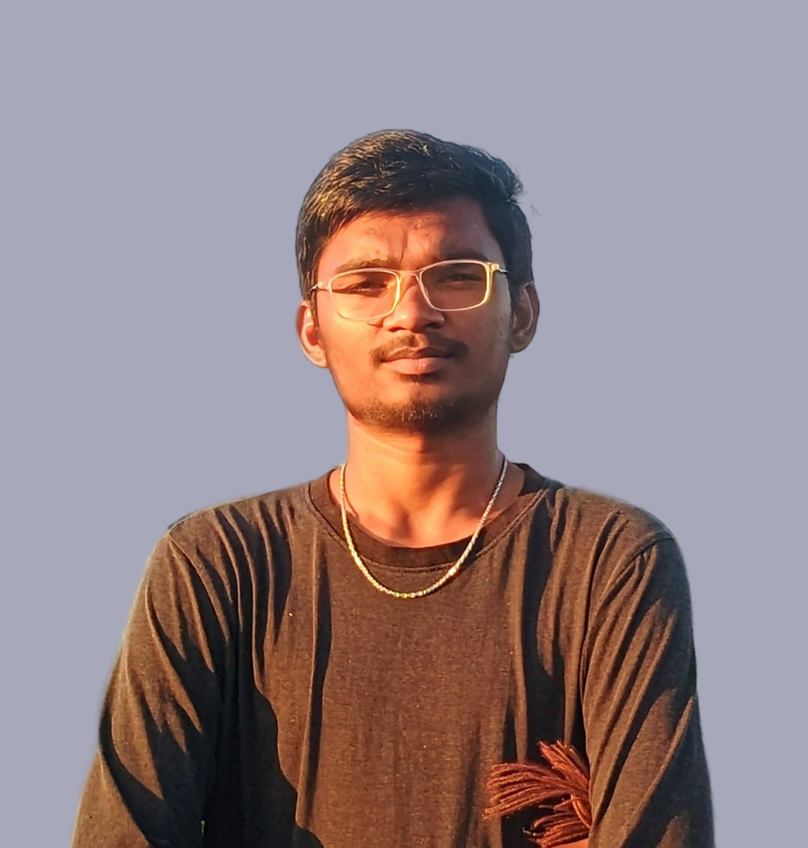

Venkat Macha
Web Developer | AI Enthusiast
About Me
Hello! I'm Macha Venkat, an enthusiastic learner with a deep passion for exploring new technologies. I am always eager to learn and grow, especially in areas like Artificial Intelligence, Machine Learning, Natural Language Processing (NLP), and full-stack web development.
I have hands-on experience in Java, C++, Python. With my strong technical foundation and curiosity, I am eager to leverage my skills to contribute to innovative and impactful tech solutions, particularly in the AI/ML domain.
Download ResumeInterests
- Artificial Intelligence & Machine Learning
- Natural Language Processing (NLP)
- Data Science & Analytics
- Open Source Contribution
- Full-Stack Web Development
Education
- Bachelor of Technology, CSE - AI & ML
- Keshav Memorial Institute of Technology
- Graduation Year: 2025